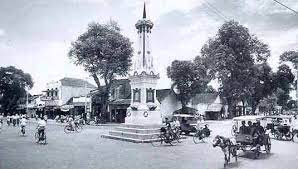
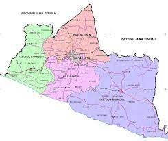
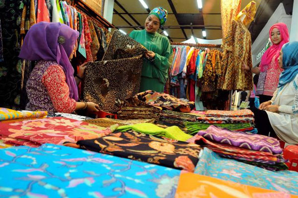
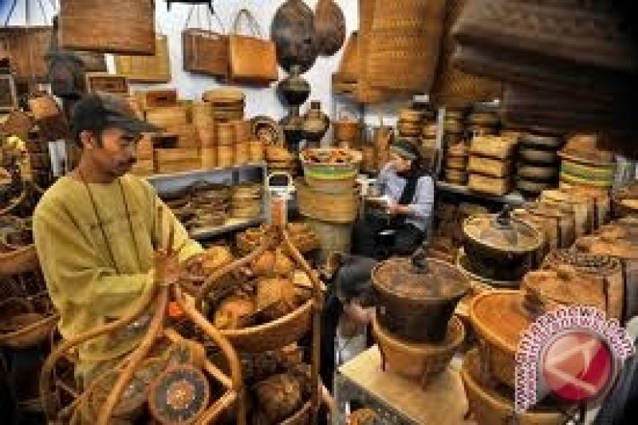
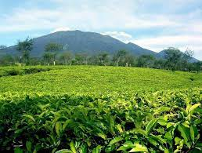

Sejarah

Sebelum Indonesia merdeka, Yogyakarta merupakan daerah yang mempunyai pemerintahan sendiri atau disebut Zelfbestuurlandschappen/Daerah Swapraja, yaitu Kasultanan Ngayogyakarta Hadiningrat dan Kadipaten Pakualaman.
Setelah Proklamasi Kemerdekaan Republik Indonesia (RI), Sri Sultan Hamengkubuwana IX dan Sri Paku Alam VIII menyatakan kepada Presiden RI, bahwa Daerah Kasultanan Yogyakarta, dan Daerah Pakualaman menjadi wilayah Negara RI, bergabung menjadi satu kesatuan yang dinyatakan sebagai Daerah Istimewa Yogyakarta (DIY).
Geografis

DIY terletak di bagian tengah-selatan Pulau Jawa, secara geografis terletak pada 8º 30'–7º 20' Lintang Selatan, dan 109º 40'–111º 0' Bujur Timur.
Berdasarkan bentang alam, wilayah DIY dapat dikelompokkan menjadi empat satuan fisiografi, yaitu satuan fisiografi Gunungapi Merapi, satuan fisiografi Pegunungan Sewu atau Pegunungan Seribu, satuan fisiografi Pegunungan Kulon Progo, dan satuan fisiografi Dataran Rendah.
Ekonomi
Perekonomian Daerah Istimewa Yogyakarta antara lain meliputi sektor Investasi; Perindustrian, Perdagangan, Koperasi, dan UKM; Pertanian; Ketahanan Pangan; Kehutanan, dan Perkebunan; Perikanan, dan Kelautan; Energi, dan Sumber Daya Mineral; serta Pariwisata.
Penanaman Modal dan Industri

Penanaman modal di DIY dilaksanakan melalui program peningkatan promosi, dan kerja sama investasi serta program peningkatan iklim investasi, dan realisasi investasi.
Perdagangan dan UKM

Varian produk ekspor DIY andalan meliputi produk olahan kulit, tekstil, dan kayu. Pakaian jadi tekstil dan mebel kayu merupakan produk yang mempunyai nilai ekspor tertinggi. Namun, secara umum ekspor ke mancanegara didominasi oleh produk-produk yang dihasilkan dengan nilai seni, dan kreatif tinggi yang padat karya (labor intensive).
Pertanian dan Kehutanan

Tingkat kesejahteraan petani dalam bidang pertanian di DIY yang diukur dengan Nilai Tukar Petani (NTP) NTP dapat menjadi salah satu indikator yang menunjukkan tingkat kesejahteraan petani di suatu wilayah.